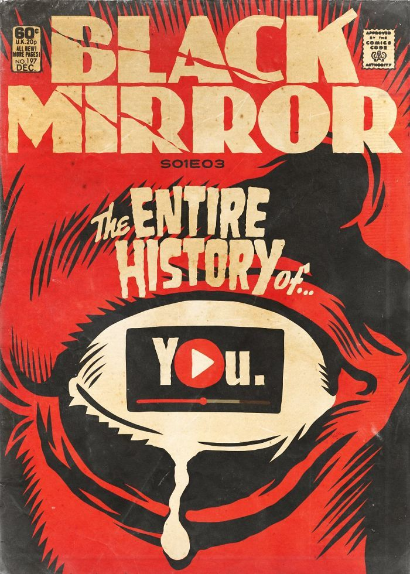

#MetadeDoQueVocêVê
Em um futuro próximo, as pessoas possuem um implante cerebral chamado "grão" que permite gravar e reproduzir todas as suas memórias visuais e auditivas. Liam (Toby Kebbell) suspeita da infidelidade de sua esposa Ffion (Jodie Whittaker) com um amigo, Jonas, durante um jantar. Obcecado, ele usa o grão para reviver e analisar cada interação, levando-o a descobrir a traição. A obsessão de Liam o consome, e ele tenta remover o implante, sozinho e atormentado por suas memórias.

É o único episódio da 1ª Temporada que não foi escrito ou coescrito por Charlie Brooker, mas sim por Jesse Armstrong.
A tecnologia “grão” é semelhante ao “Z-Eyes” de “Natal” e ao “MASS” de “Homens Contra o Fogo”, sugerindo uma progressão da tecnologia de gravação de memória e percepção.
A tecnologia “grão” em “Striking Vipers” (temporada 5) é uma versão inicial do conceito.
Um filme de Hollywood baseado no episódio, produzido por Robert Downey Jr., está em “inferno de desenvolvimento”.
A cena de sexo entre Liam e Ffion, onde assistem a uma memória anterior em seus olhos, foi alterada de uma versão original mais "divertida e um pouco triste" para uma "assustadora".
"Toda A Sua História” é uma exploração arrepiante de como a tecnologia pode amplificar as falhas e vulnerabilidades dos relacionamentos humanos. O grão, embora prometa a verdade objetiva, na realidade aprisiona os personagens em ciclos de paranoia e auto-dúvida, como visto na obsessão de Liam. A capacidade de reviver momentos com clareza perfeita espelha a experiência do trauma, sugerindo que o esquecimento pode ser crucial para a cura. O episódio questiona se a transparência total é benéfica ou se fomenta uma sociedade opressiva e desconfiada, onde a privacidade não existe. A dependência de Liam do grão revela uma desconfiança inerente a Ffion, que é tanto uma causa quanto um sintoma de seu casamento em deterioração. A história sugere que a imperfeição da memória é parte do que nos torna humanos e que tentar impor controle sobre ela pode levar à perda da nuance emocional e do perdão, elementos vitais para a sustentação dos relacionamentos.
Os temas incluem memória, confiança em relacionamentos, privacidade, vigilância, a ilusão de objetividade e o impacto da tecnologia na vulnerabilidade humana.
Liam Foxwell (Toby Kebbell): O protagonista, cuja insegurança e ciúme são amplificados pela tecnologia do grão.
Ffion (Jodie Whittaker): A esposa de Liam, cujas ações passadas são expostas pela tecnologia.
Jonas (Tom Cullen): O amigo de Ffion com quem ela teve um caso.
❝Nem tudo que não é verdade é uma mentira, Liam.
— Ffion
Uma fala que destaca a complexidade da verdade e da percepção em relacionamentos.
❝Você sabe quando você suspeita de algo, é sempre melhor quando se revela ser verdade. É como se eu tivesse um dente ruim por anos e finalmente estou colocando minha língua lá e estou cavando toda a merda podre.
— Liam
A metáfora de Liam para sua obsessão e busca pela verdade.
❝Rei Jonas, Pênis Dorminhoco de Marrakech, te enlouqueceu?
Uma fala agressiva de Liam.
Data de Estreia:
18 Dez 2011
Duração:
49:16
Escritor:
Jesse Armstrong
Diretor:
Brian Welsh